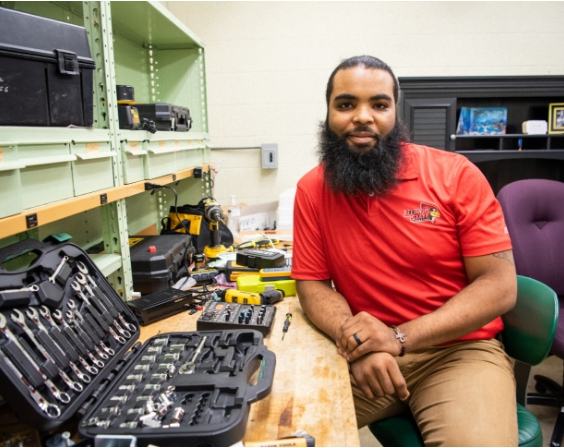

Irvin Hooker Jr
Audio/Visual Technician
Certified Technology Specialist
Content Creator
Bio
Welcome to my Porfolio. My name is Irvin Hooker. I am an Audio/Visual Technician for Illinois State University. When it comes to A/V technology I do set ups, tests, operate, assesse, and repair equipment required for live events, such as music concerts, sporting events, virtual classrooms, video conferences, such as Skype or Webex, and entertainment shows.
Now focused on Technical support my experience in customer service provide a great sense of leadership and initiative in the workplace. Throughout the span of my career I've honed in on specific traits and aspects of each work experience to strengthen my communication, leadership, and collaborative skills. These actions have lead to exponential growth within the realms of Audio Visual Tech, Time Management, and the use of Agile Methodologies within the workplace! Please enjoy my galleries of work!